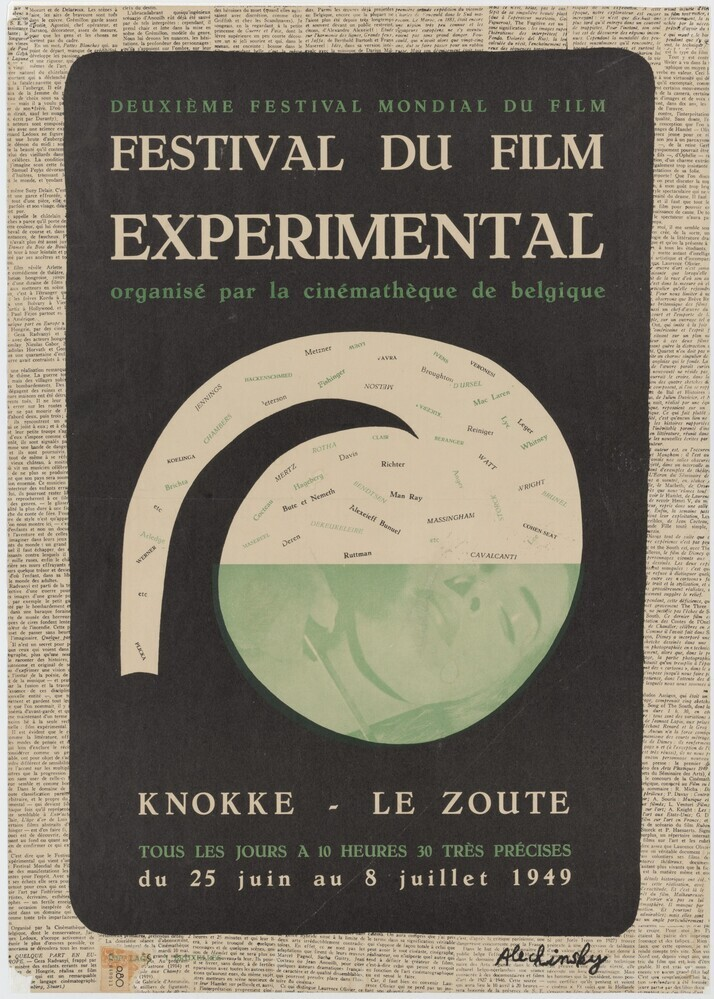
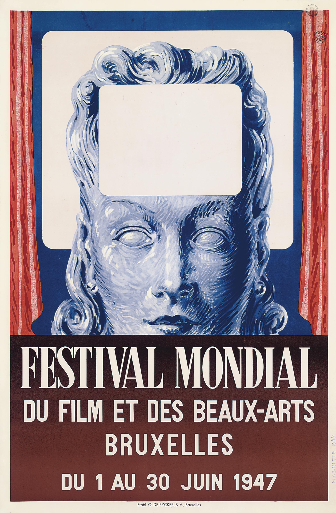
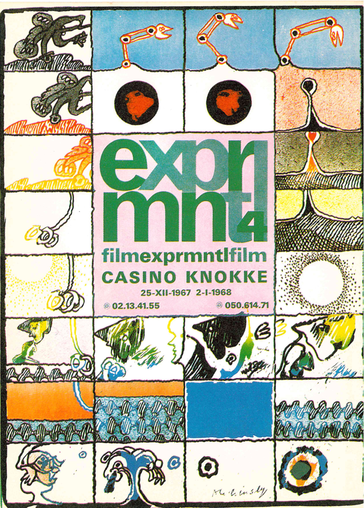
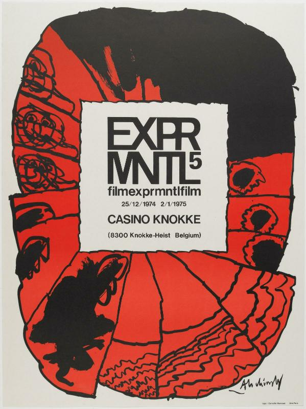

Editions
Five editions, five moments in the history of avant-garde film
EXPRMNTL was never an annual event. It happened only five times in twenty-five years, always between Christmas and New Year, always in the same vacant casino in Knokke-le-Zoute. Each edition below is a placeholder for that year's programme, poster and surviving documents.

EXPRMNTL 1
Organized as a side programme within a wider Brussels-area event marking cinema's fiftieth anniversary, the 1949 selection is generally treated as the festival's point of origin — an attempt at a first retrospective of avant-garde film since the invention of cinema.
See films tagged 1949 →
EXPRMNTL 2
Staged alongside the 1958 Brussels World's Fair, this was the first edition to run under the EXPRMNTL name. It introduced early work by filmmakers who would go on to define the coming decade of experimental and New Wave cinema.
See films tagged 1958 →
EXPRMNTL 3
The edition that set the format the festival would become known for: a week between Christmas and New Year, in the empty casino, bringing filmmakers together with writers, musicians and artists from across disciplines. The poster was designed by the painter Pierre Alechinsky.
See films tagged 1963 →
EXPRMNTL 4
A larger and more contested edition, remembered for its programming disputes as much as for its films — part of what has since made it a case study in festival politics and the limits of an all-Belgian selection jury.
See films tagged 1967 →
EXPRMNTL 5
The last edition of the festival, after which EXPRMNTL was not repeated. It closed a twenty-five-year arc that had, for a few weeks at a time, made a small Belgian seaside casino into a meeting point for the international avant-garde.
See films tagged 1974 →